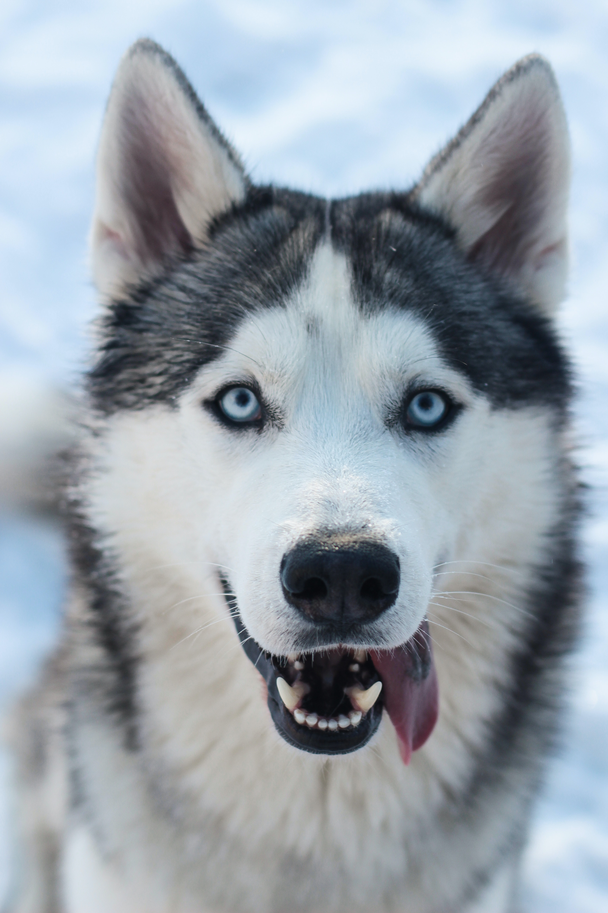

This website contains information about various dog breeds.
Here are some dog breeds!
The Shiba Inu is a hunting dog from Japan. It is known for its alertness, agility, and stubbornness.
The Samoyed is a herding dog from Siberia (Russia). It is known for its friendliness, alertness, and diligence as a watch-dog.
The Golden Retriever is a British breed of retriever dog. It is known for its intelligence, gentleness, and obedience.

The Husky is a sled-dog from Siberia (Russia). It is known for its energy, resilience, and companionship.
Owners of dogs will have noticed that, if you provide them with food and water and shelter and affection, they will think you are god. Whereas owners of cats are compelled to realize that, if you provide them with food and water and shelter and affection, they draw the conclusion that they are gods.
– Christopher Hitchens
Call to action! It's time!
Sign up for our weekly newsletter by clicking the button on the right.